AI 斩书 —— 用 AI 技术重新定义错题管理，让学习更高效
"AI 斩书" 是一款面向小学至初中学生的 AI 智能学习辅助 APP，聚焦中小学生错题管理与高效学习的核心需求。
直击传统搜题类 APP 错题整理繁琐、解析缺乏深度、功能冗余干扰、家长监管缺失等痛点，打造拍照收题 → AI 深度解析 → 错题智能归档 → 精准组卷巩固的一站式学习闭环。
中小学生
小学至初中学生，需要高效管理错题、提升学习效率
家长
关注孩子学习进度，希望通过数据了解孩子薄弱环节
教师
辅助教学，快速组卷，精准了解学生薄弱知识点
三种视觉风格方向，定义产品的设计语言与情感基调
以干净的线条与充足留白为核心，摒弃冗余装饰。色彩克制、排版通透，让用户专注于内容本身，营造高效清爽的学习氛围。
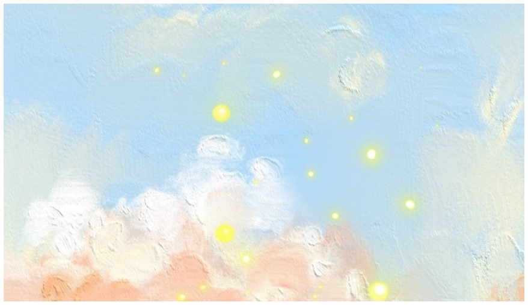
运用暖色调与圆润造型，营造亲切友好的界面感受。柔和的色彩过渡与细腻的微交互，让学生在使用中感受到关怀与鼓励。
以蓝色系为主调，传递理性与专注。清晰的视觉层次与结构化布局，帮助学生沉浸于学习场景，提升知识吸收效率。
四大核心模块，构建完整的学习闭环
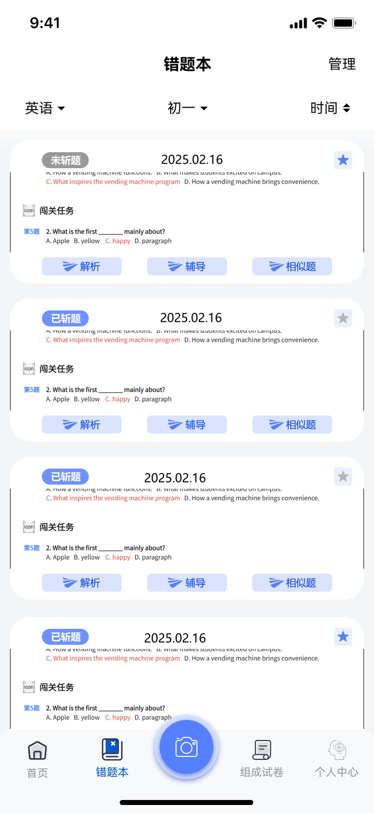
错题本是用户管理错题与复习巩固的核心区域。支持按科目、年级、时间进行筛选，快速定位目标错题。每道题目提供三大核心功能入口。
点击"解析"按钮，AI 自动分析题目并给出详细解题步骤、答案及考察知识点。帮助学生理解解题思路，掌握核心概念，而非简单对答案。
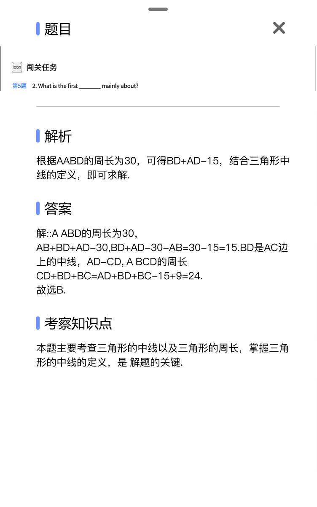
点击"辅导"进入 AI 对话界面，可以针对错题进行深度追问。AI 会根据题目内容进行个性化辅导，解答疑问，帮助学生真正理解知识点。
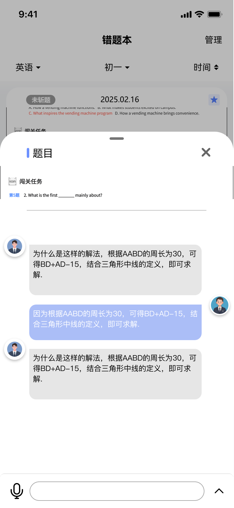
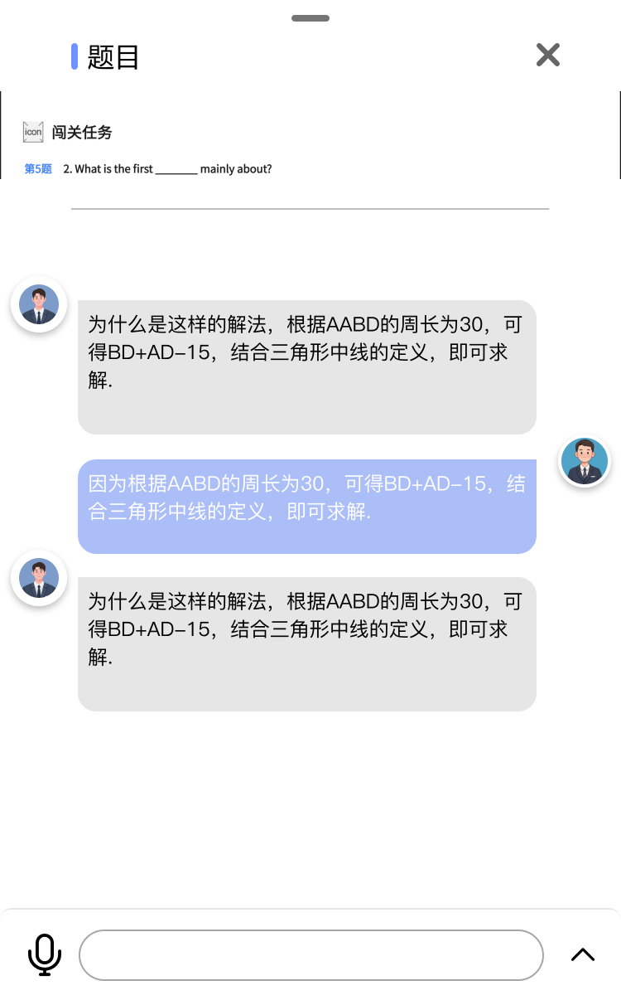
点击"相似题"，AI 智能推荐与当前错题知识点相似的练习题目，帮助学生举一反三，巩固薄弱环节，避免同类错误再次发生。
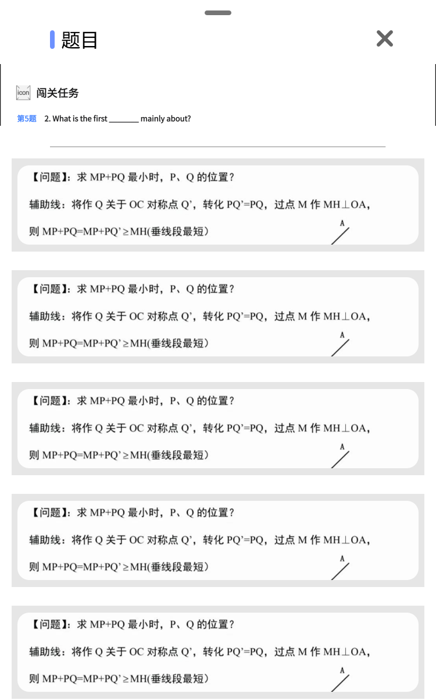
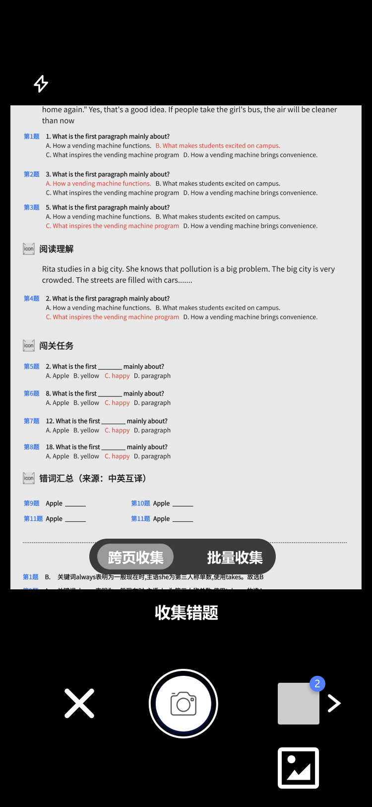
一键拍照，智能识别试卷、练习册上的错题。支持多题同时识别，自动拆分并归类到错题本中，省去手动抄题的繁琐过程。
打开相机，对准试卷或练习册进行拍照。支持批量拍照，自动识别页面中的所有题目。
AI 自动识别图片中的题目，进行 OCR 文字提取和题目拆分，支持多题同时识别，精准定位每一道题目。
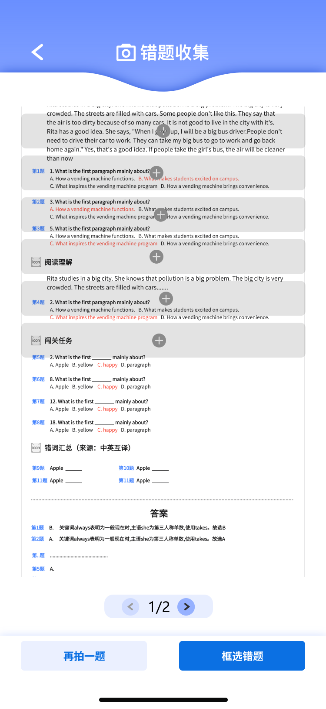
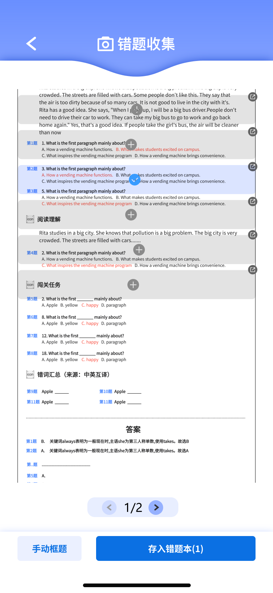
选择需要保存的题目，选择科目和年级，一键加入错题本。支持手动校验和重新识别，确保题目准确性。
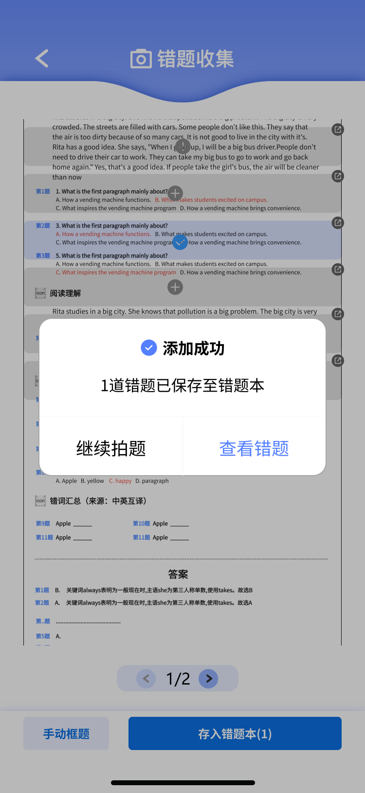
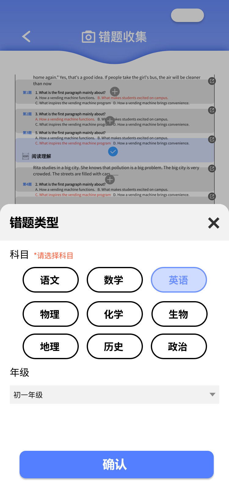
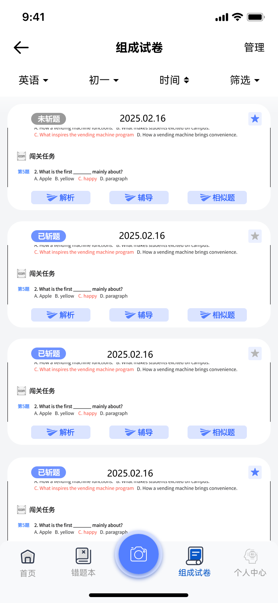
从错题本中精选题目，按科目、年级、掌握程度等维度筛选，快速组成个性化试卷，支持预览和导出打印。
支持按科目、来源、掌握程度、收集时间、年级等多维度筛选错题，精准定位需要巩固的薄弱环节。
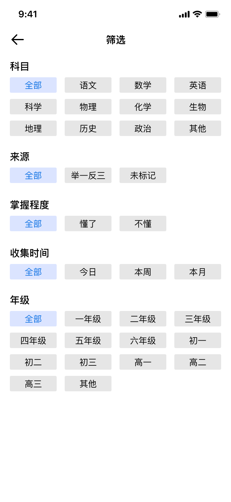
组卷完成后可预览试卷全貌，确认题目顺序和内容。支持删除不需要的题目，灵活调整试卷结构。
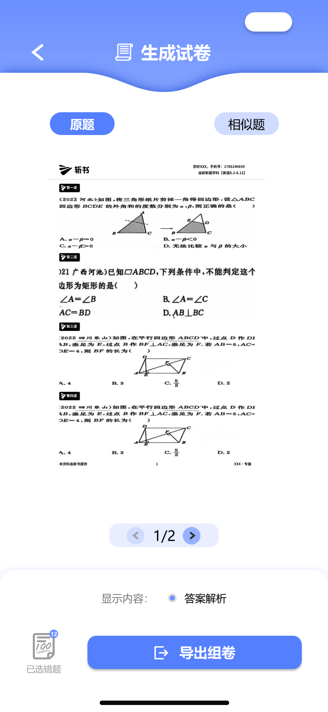
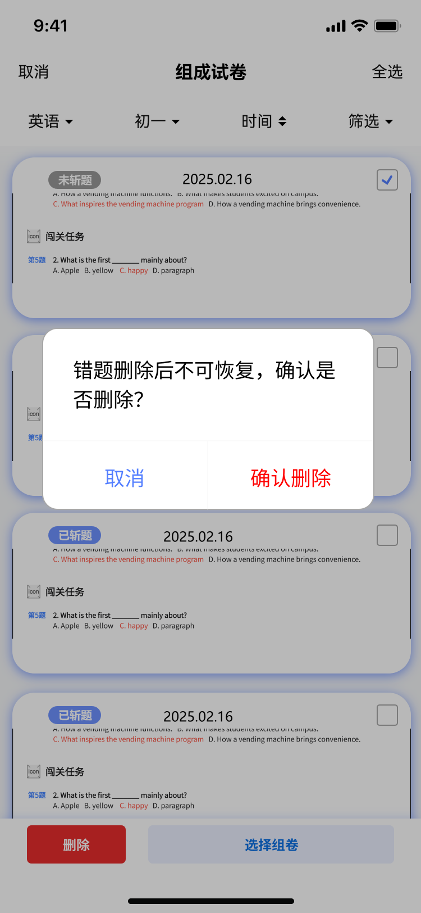
确认无误后一键导出试卷，支持打印成纸质版进行线下练习，实现线上错题管理与线下巩固的无缝衔接。
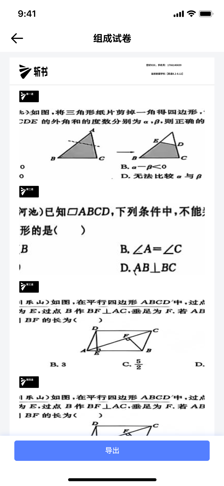
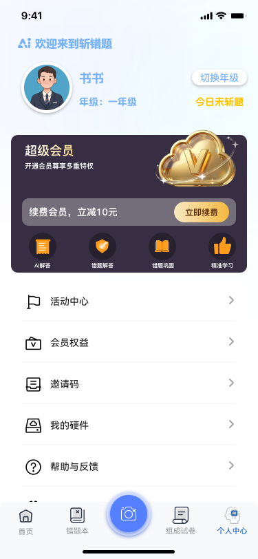
管理个人信息、查看学习数据统计、切换年级和科目偏好，全面掌控学习进度。
查看错题数量、已掌握比例、学习时长等数据，直观了解学习进度。
切换年级、科目偏好，个性化定制学习体验。
管理收藏的题目、查看学习历史记录，方便回顾与复习。
点击模块方块，查看完整界面预览
4 张界面
功能入口
错题管理
AI 解析
对话辅导
智能识别
筛选与预览
数据与设置
三步完成错题管理，轻松开启智能学习之旅
打开 APP，使用拍照功能对准试卷或练习册。AI 自动识别题目，支持多题同时采集，一键保存到错题本。
在错题本中按科目、年级、时间筛选错题。查看 AI 解析、进行 AI 辅导对话、获取相似题推荐，深度掌握薄弱知识点。
从错题本中筛选薄弱知识点，智能组卷生成专属试卷。导出打印进行线下练习，巩固学习成果。
AI 技术赋能教育，让学习更高效、更智能
去除冗余功能，专注核心学习场景。三步完成错题管理，节省 80% 整理时间
不只是给答案，而是通过 AI 分析解题思路、考察知识点，帮助真正理解
根据错题数据智能推荐相似题，精准定位薄弱环节，实现因材施教
拍照收题 → AI 解析 → 错题归档 → 组卷巩固，完整覆盖学习全流程